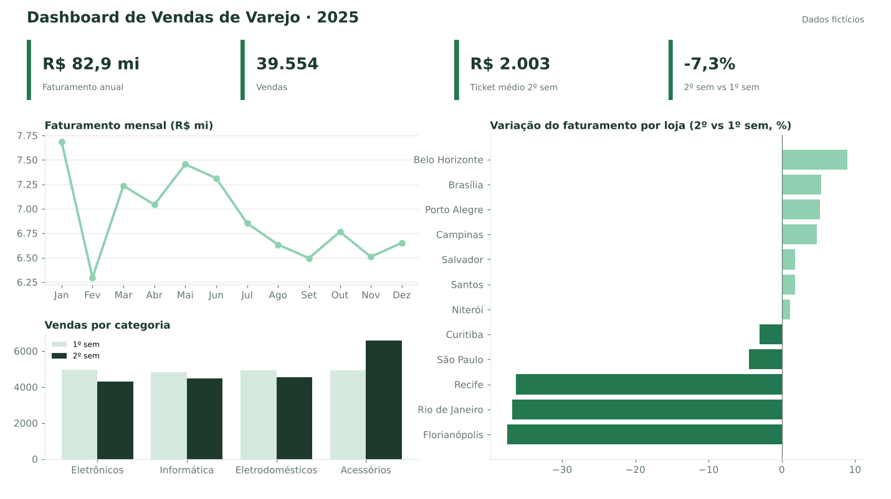

Power BI · DAX
Dashboard de Vendas de Varejo
Uma rede fictícia com 12 lojas queria entender por que o faturamento caiu no 2º semestre.
Ação: modelo estrela (fato vendas + dimensões loja, produto, calendário) e medidas DAX de ticket médio, variação YoY e meta x realizado.
Resultado: o faturamento caiu 7,3% no 2º semestre e só 3 lojas explicavam toda a queda; nelas, o mix migrou para acessórios e o ticket médio da rede caiu 8,6%.
R$ 82,9 mi39,5 mil vendas-8,6% ticket